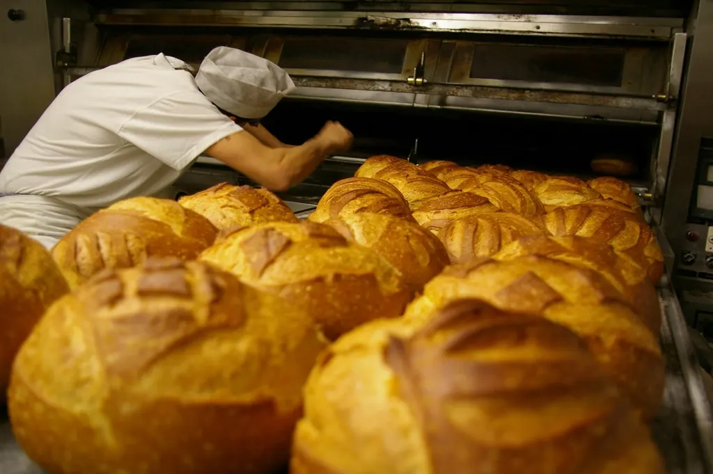
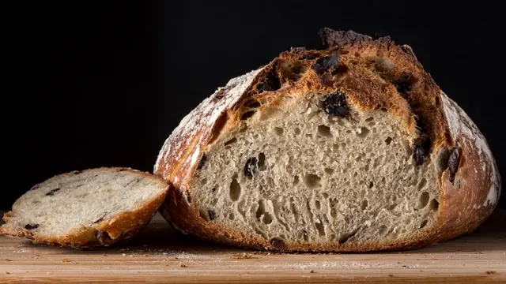
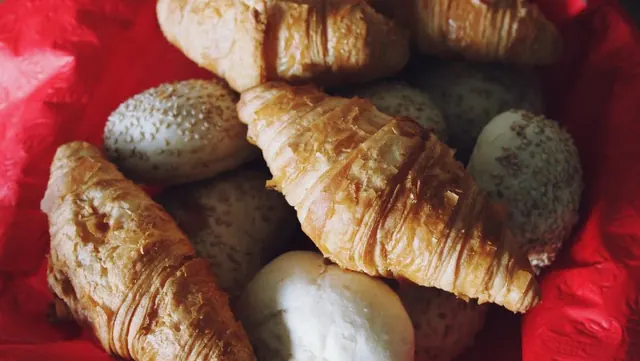

Pan que tarda 48 horas en estar listo.
Masa madre, harina de molino de piedra y un horno que encendemos a las cuatro de la mañana. Sin prisas, sin aditivos. En Getxo desde 1987.
Lo que sale del horno
Cada día, en cantidad limitada. Lo que se acaba, se acaba.
-

5,80 €Hogaza de masa madre
Trigo y un 20 % de centeno. Corteza crujiente, miga abierta. Aguanta cuatro días.
-
 1,90 €
1,90 €Baguette de la casa
Fermentación lenta en frío. La que sale a las 7:30 vuela antes de las nueve.
-
 6,40 €
6,40 €Pan de centeno y semillas
Denso, oscuro, con lino, pipas y sésamo. Perfecto para tostar.
-

1,60 €Croissant de mantequilla
Laminado durante dos días. Sábados y domingos.

“Mi aita hacía el pan igual que lo hacemos hoy. Solo hemos cambiado el horno.”
Miren Arrieta, segunda generaciónUna panadería de barrio
Abrimos en la calle Mayor en 1987 y desde entonces hacemos el pan a mano, en el obrador que hay detrás del mostrador.
Nuestra historia¿Quieres que te guardemos pan?
Encárganoslo el día antes y lo tendrás reservado. También hacemos tartas y pedidos para eventos.